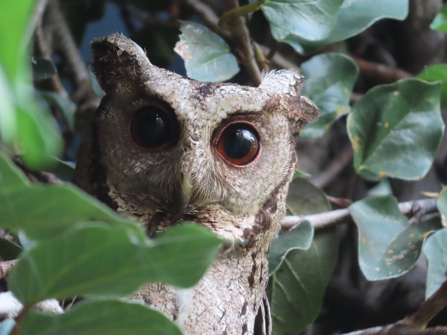

鸟类 · 动物界
领角鸮 Otus lettia

小型角鸮，灰褐色羽毛布满细密虫蠹斑，头顶生有短耳羽簇。夜间在村落、公园与林地间发出低沉鸣叫，是南方最常见的猫头鹰之一。
- 分类
- 门脊索动物门纲鸟纲目鸮形目科鸱鸮科属角鸮属
- 栖息环境
- 低山常绿阔叶林、混交林、竹林、果园、公园与村寨附近，偏好有古树和树洞的环境。
- 地理分布
- 南亚、东南亚北部至中国东部、南部、海南及台湾，多为留鸟。
- 保护级别
- IUCN 红色名录列为无危（LC）；中国国家二级保护野生动物，列入 CITES 附录二。
物种志
领角鸮体长约二十三至二十五厘米，体重一百至一百七十克。头大而圆，头顶两侧各有一撮短小的耳羽簇；面盘浅灰褐色，眼先白色，眉纹淡白，形成明显的浅色“眼镜”。上体灰褐至棕褐，密布黑色虫蠹状细斑和浅色横纹；下体色浅，具黑色纵纹与横斑。虹膜橙红至暗褐，嘴灰绿，脚灰褐色。
它栖息于低山常绿林、混交林、竹林、果园、公园和村寨附近的古树，白天隐于枝叶间，夜间在枝头守候，捕食蛾类、金龟子等昆虫，也吃小鼠、蛙与小鸟。繁殖期利用树洞或墙缝营巢，每窝产卵三至五枚。鸣声为低沉、间隔数秒的“不—不—”声，繁殖季可整夜重复。领角鸮为留鸟，分布于南亚至中国东部、南部及台湾，适应力强，在城市绿地中也能稳定繁殖。
形态与习性
- 体长23–25 厘米
- 体重100–170 克
- 食性昆虫为主，兼食小鼠、蛙与小鸟
- 繁殖树洞或墙缝营巢，每窝 3–5 枚
- 鸣声间隔数秒的低沉“不—不—”声
- 保护级别国家二级；CITES 附录二
趣味知识
- 短耳羽簇受惊时会竖起，使头部轮廓显得更方。
- 橙红色的眼睛在夜间手电照射下格外醒目。
- 能长期生活在城市公园，靠树洞繁殖。